Opera
opera is an R package that provides several algorithms to perform robust online prediction of time series with the help of expert advice. In this vignette, we provide an example of how to use the package.
Setting: when is the package opera useful?
Consider a sequence of real bounded observations \(y_1,\dots,y_n\) to be predicted step by step. Suppose that you have at your disposal a finite set of methods \(k =1,\dots,K\) (henceforth referred to as experts) that provide you before each time step \(t=1,\dots,n\) predictions \(x_{k,t}\) of the next observation \(y_t\). You can form your prediction \(\widehat y_t\) by using only the knowledge of the past observations \(y_1,\dots,y_{t-1}\) and past and current expert forecasts \(x_{k,1},\dots,x_{k,t}\) for \(k=1,\dots,K\). The package opera implements several algorithms of the online learning literature that form predictions \(\widehat y_t\) by combining the expert forecasts according to their past performance. That is, \[ \widehat y_t = \sum_{k=1}^K p_{k,t} x_{k,t} \,. \] These algorithms come with finite time worst-case guarantees. The monograph of Cesa-Bianchi and Lugisi (2006) gives a complete introduction to the setting of prediction of arbitrary sequences with the help of expert advice.
What are the most important functions?
The package opera provides three important functions: mixture to build the algorithm object, predict to make a prediction by using the algorithm, and oracle to evaluate the performance of the experts and compare the performance of the combining algorithm.
Installation
opera is now available on CRAN, so you can install it with:
install.packages("opera")You can also install the development version of opera with the package devtools:
install.packages("devtools")
devtools::install_github("dralliag/opera")You may be asked to install additional necessary packages. You can install the package vignette by setting the option: build_vignettes = TRUE.
Example: predict the weekly electricity consumption.
Here, we provide a concrete example on how to use the package. To do so, we consider an electricity forecasting data set that includes weekly observations of the French electric load together with several covariates: the temperature, calendar information, and industrial production indexes. The data set is provided by the French National Institute of Statistics and Economic Studies (Insee).
The data set
First, we load the data and we cut it into two subsets: a training set used to build the experts (base forecasting methods) and a testing set (here the last two years) used to evaluate the performance and to run the combining algorithms.
data(electric_load)
attach(electric_load)
idx_data_test <- 620:nrow(electric_load)
data_train <- electric_load[-idx_data_test, ]
data_test <- electric_load[idx_data_test, ] The data is displayed in the following figures.
plot(Load, type = "l", main = "The electric Load")
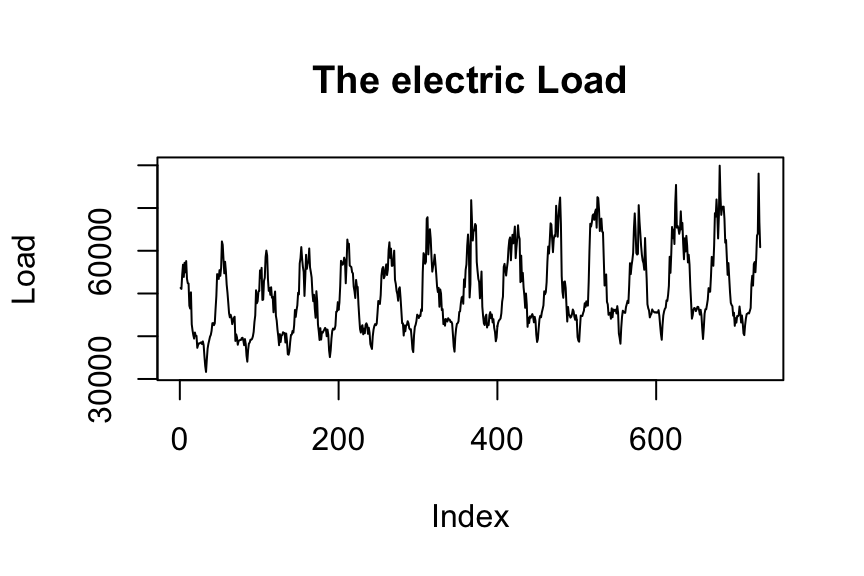
plot(Temp, Load, pch = 16, cex = 0.5, main = "Temperature vs Load")
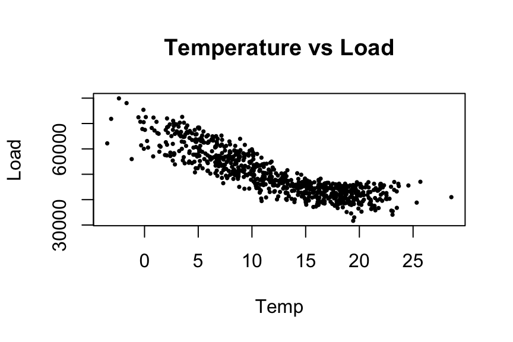
plot(NumWeek, Load, pch = 16, cex = 0.5, main = "Annual seasonality")
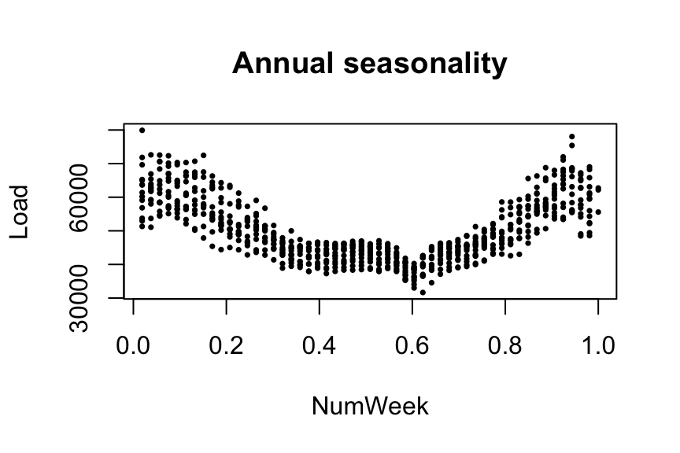
First: build the expert forecasts
Here, we build three base forecasting methods to be combined later.
- A generalized additive model using the
mgcvpackage:
library(mgcv)
gam.fit <- gam(Load ~ s(IPI) + s(Temp) + s(Time, k=3) +
s(Load1) + as.factor(NumWeek), data = data_train)
gam.forecast <- predict(gam.fit, newdata = data_test)- A medium term generalized additive model followed by an autoregressive short-term correction.
# medium term model
medium.fit <- gam(Load ~ s(Time,k=3) + s(NumWeek) + s(Temp) + s(IPI), data = data_train)
electric_load$Medium <- c(predict(medium.fit), predict(medium.fit, newdata = data_test))
electric_load$Residuals <- electric_load$Load - electric_load$Medium
# autoregressive correction
ar.forecast <- numeric(length(idx_data_test))
for (i in seq(idx_data_test)) {
ar.fit <- ar(electric_load$Residuals[1:(idx_data_test[i] - 1)])
ar.forecast[i] <- as.numeric(predict(ar.fit)$pred) + electric_load$Medium[idx_data_test[i]]
}- A gradient boosting model using
caretpackage
library(caret)
gbm.fit <- train(Load ~ IPI + IPI_CVS + Temp + Temp1 + Time + Load1 + NumWeek, data = data_train, method = "gbm")
gbm.forecast <- predict(gbm.fit, newdata = data_test)Once the expert forecasts have been created (note that they can also be formed online), we build the matrix of expert and the time series to be predicted online
Y <- data_test$Load
X <- cbind(gam.forecast, ar.forecast, gbm.forecast)
matplot(cbind(Y, X), type = "l", col = 1:6, ylab = "Weekly load",
xlab = "Week", main = "Expert forecasts and observations")
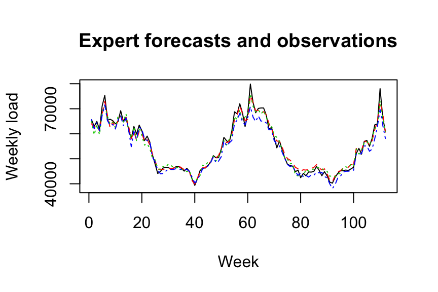
How good are the experts? Look at the oracles
To evaluate the performance of the experts and see if the aggregation rules may perform well, you can look at the oracles (rules that are used only for analysis and cannot be design online).
oracle.convex <- oracle(Y = Y, experts = X, loss.type = "square", model = "convex")
print(oracle.convex)
plot(oracle.convex)
#> Call:
#> oracle.default(Y = Y, experts = X, model = "convex", loss.type = "square")
#>
#> Coefficients:
#> gam ar gbm
#> 0.719 0.201 0.0799
#>
#> rmse mape
#> Best expert oracle: 1480 0.0202
#> Uniform combination: 1560 0.0198
#> Best convex oracle: 1440 0.0193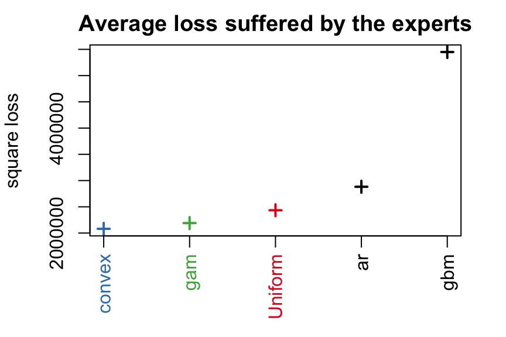
The parameter loss.type defines the evaluation criterion. It can be either the square loss, the percentage loss, the absolute loss, or the pinball loss to perform quantile regression.
The parameter model defines the oracle to be calculated. Here, we computed the best fixed convex combination of expert (i.e., with non-negative weights that sum to one).
Aggregate the experts online using one of the possible aggregation procedures
The first step consists in initializing the algorithm by defining the type of algorithm (Ridge regression, exponentially weighted average forecaster,…), the possible parameters, and the evaluation criterion. If no parameter is defined by the user, all parameters will be calibrated online by the algorithm. Bellow, we define the ML-Poly algorithm, evaluated by the square loss.
MLpol0 <- mixture(model = "MLpol", loss.type = "square")Then, you can perform online predictions by using the predict method. At each time, step the aggregation rule forms a new prediction and update the procedure.
MLpol <- MLpol0
for (i in 1:length(Y)) {
MLpol <- predict(MLpol, newexperts = X[i, ], newY = Y[i])
}The results can be displayed with method summary and plot.
summary(MLpol)
#> Aggregation rule: MLpol
#> Loss function: square loss
#> Gradient trick: TRUE
#> Coefficients:
#> gam ar gbm
#> 0.577 0.423 0
#>
#> Number of experts: 3
#> Number of observations: 112
#> Dimension of the data: 1
#>
#> rmse mape
#> MLpol 1460 0.0192
#> Uniform 1560 0.0198plot(MLpol, pause = TRUE)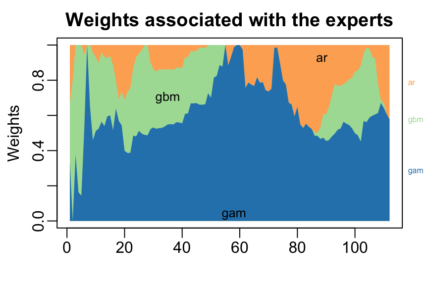
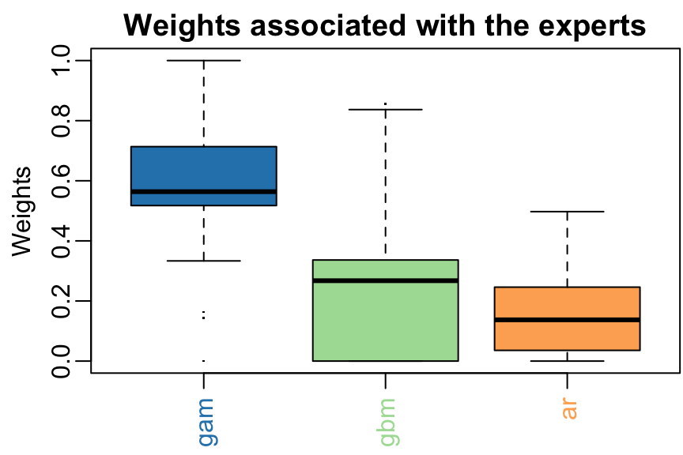
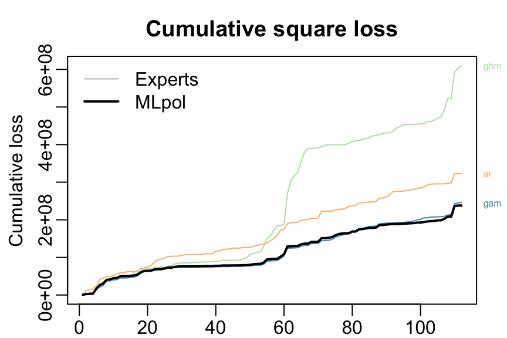
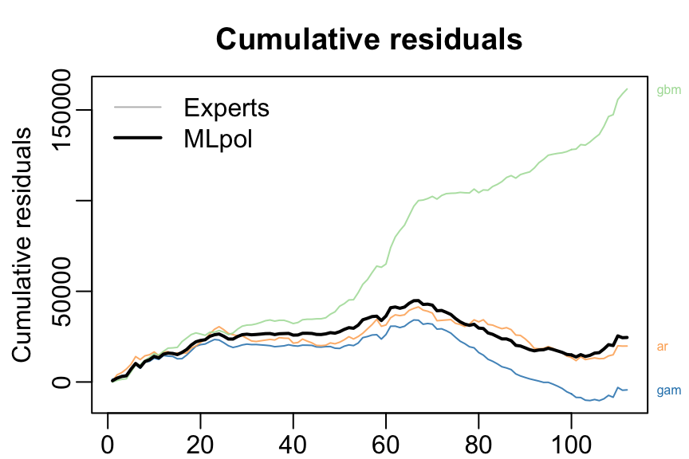
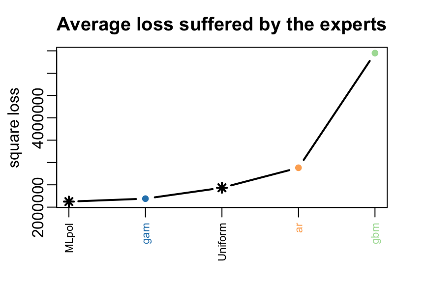
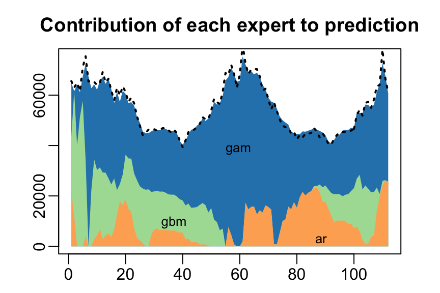
The same results can be obtained more directly:
- by giving the whole time series to
predictspecifyingonline = TRUEto perform online prediction.
MLpol <- predict(MLpol0, newexpert = X, newY = Y, online = TRUE)- or directly to the function mixture, when building the aggregation rule
MLpol <- mixture(Y = Y, experts = X, model = "MLpol", loss.type = "square")About the predictions
The vector of predictions formed by the mixture can be obtained through the output prediction.
predictions <- MLpol$predictionNote that these predictions were obtained sequentially by the algorithm by updating the model coefficients after each data. It is worth to emphasize that each observation is used to get the prediction of the next observations but not itself (nor past observations).
In real-world situations, predictions should be produced without having access to the observed outputs. There are several solutions to get them with opera.
Using the predict method with the arguments * online = FALSE: the model coefficients are not updated during the prediction. * type = response: the predictions are returned and not an updated model.
newexperts <- X[1:3, ] # Experts forecasts to predict 3 new points
pred <- predict(MLpol, newexperts = newexperts, online = FALSE, type = 'response')#> [1] 64397.10 61317.41 63571.59The same result can be easily obtained by using the last model coefficients to perform the weighted average of the expert advice.
pred = newexperts %*% MLpol$coefficients#> [1] 64397.10 61317.41 63571.59Block by block predictions
In some situations, the aggregation model cannot be updated at each step due to an operational constraint. One must predict the time-series \(y_1,\dots,y_n\) block by block. For example, a weather website might want to make a daily forecast of the next day’s temperature at hourly intervals. This corresponds to block by block predictions of 24 observations.
Let’s say that in the above example, instead of making a weekly prediction, we need to predict every four weeks, the consumption of the next four weeks. Below we show two different ways to use the opera package to do this.
Using d-dimensional time-series
Note that the outputs \(y_1,\dots,y_n\) to be predicted step by step can be \(d\)-dimensional in opera. In this case, the argument Y provided to the function mixture should be a matrix, where each line corresponds to the output observed at time \(t\); the argument experts must be an array of dimension \(T \times d \times K\) such that experts[t,:,k] is the prediction made by expert \(k\) at iteration \(t\). These predictions of dimension \(d\) can be used in various situations. For example, we might want to simultaneously predict the electricity consumption of several countries in the example above.
Another useful application of this feature is block by block prediction. Consider the above exemple of electricity consumption to be predicted every four weeks. This can be easily done by transforming the original time series into a 4 dimensional time series, where each row corresponds to the four weeks to predict after each update.
YBlock <- seriesToBlock(X = Y, d = 4)
XBlock <- seriesToBlock(X = X, d = 4)The four-week-by-four-week predictions can then be obtained by directly using the mixture function as we did earlier.
MLpolBlock <- mixture(Y = YBlock, experts = XBlock, model = "MLpol", loss.type = "square")The predictions can finally be transformed back to a regular one dimensional time-series by using the function blockToSeries.
prediction <- blockToSeries(MLpolBlock$prediction)Using the online = FALSE option
Another equivalent solution is to use the online = FALSE option in the predict function. The latter ensures that the model coefficients are not updated between the next four weeks to forecast.
MLpolBlock <- MLpol0
d = 4
n <- length(Y)/d
for (i in 0:(n-1)) {
idx <- 4*i + 1:4 # next four weeks to be predicted
MLpolBlock <- predict(MLpolBlock, newexperts = X[idx, ], newY = Y[idx], online = FALSE)
}As we see below, the coefficients are updated every four lines only.
#> [,1] [,2] [,3]
#> [1,] 0.3333333 0.3333333 0.3333333
#> [2,] 0.3333333 0.3333333 0.3333333
#> [3,] 0.3333333 0.3333333 0.3333333
#> [4,] 0.3333333 0.3333333 0.3333333
#> [5,] 0.1437215 0.0000000 0.8562785
#> [6,] 0.1437215 0.0000000 0.8562785Meta
- Please report any issues or bugs.
- License: LGPL